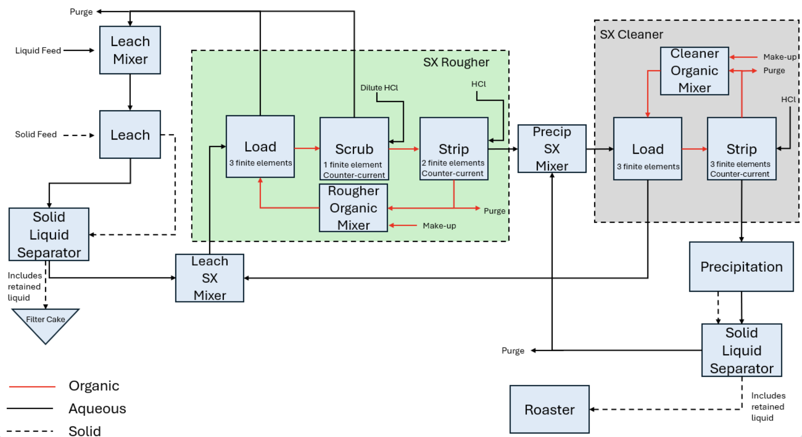
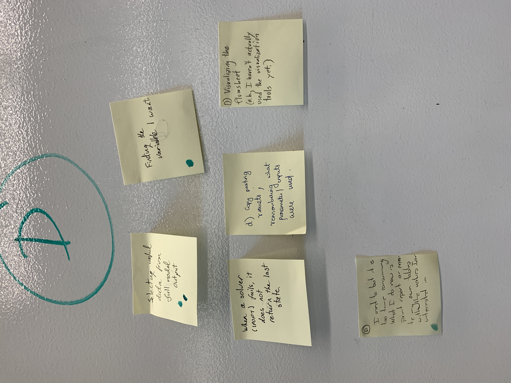
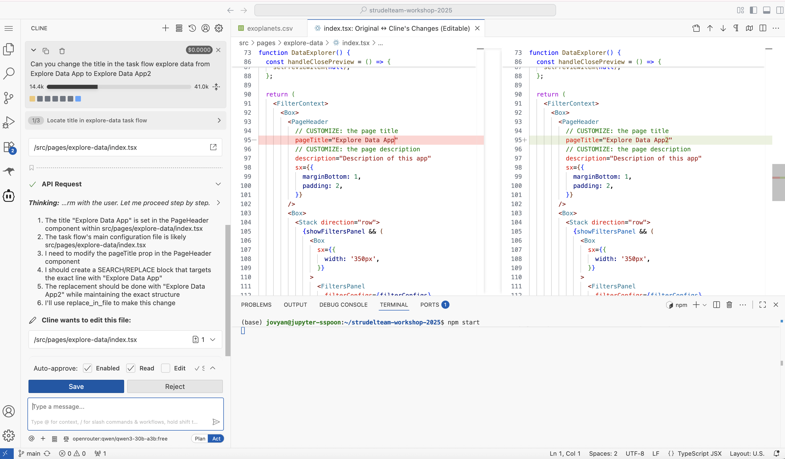
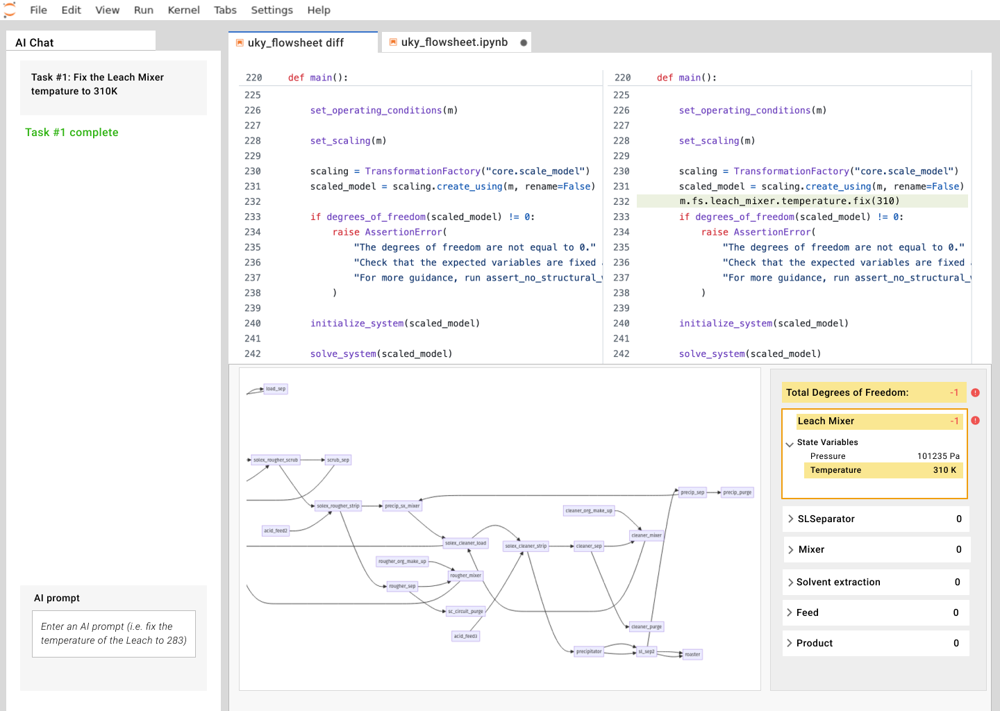

PrOMMiS · Flowsheet Inspector
How AI, conceptual models, and UX can help novice users develop code
Exploring how a visual representation of complex scientific models can help users understand and verify code developed with AI.
Background & Motivation
Making computational models easier to understand
Stories about rare earth materials have been all over the news in recent years. Although these elements aren't actually that rare, refining them into usable products requires extracting and processing them from raw materials, and these capabilities are much more scarce. Building the infrastructure for such processes demands significant time and investment.
Computational simulation and optimization can help. The PrOMMiS project is a multi-institutional collaboration developing a software modeling platform to accelerate the design and deployment of extraction and purification processes for critical minerals and rare earth elements. At its core is a Python-based library that represents these systems as mathematical equations, enabling engineers and planners to simulate and optimize process models before building physical systems.
Although these methods are powerful, they come with a steep learning curve. Many experienced process engineers are not well-versed in programming or computational optimization techniques. Across interviews, workshops, and meetings, we consistently heard about challenges learning these libraries and understanding or debugging the resulting models.
A drag-and-drop interface can make models easier to construct, but the models themselves can still feel like black boxes and remain difficult to inspect or understand.


Concept
AI and conceptual models as partners for non-programmers
Using agentic AI to help write code is becoming increasingly common, especially when working with unfamiliar codebases and libraries. In response to a prompt, AI agents often provide a narrative explanation of the changes they suggest and why they made them. When integrated into an IDE such as VS Code, they may also generate code diffs so users can visually inspect the updates.
This approach could be a major step forward in helping new users work with the PrOMMiS framework. However, code diffs alone may not provide enough context for users to fully understand or verify the changes an AI agent makes on their behalf.
This led me to reflect on my experiences using agentic AI to update frontend web code . Even when I didn't fully understand the code modifications being suggested, I could view the resulting UI and confirm whether the changes matched my intent.
This suggested another approach for scientific modeling: pair AI-generated code with a visual representation of the interpreted model. A conceptual model could provide a bridge between code and domain understanding, helping users evaluate whether the AI built what they intended.

Design hypothesis
Code diffs show users what AI changed. A visual conceptual model could help them understand what those changes mean and verify that the resulting model matches what they intended.
Design
Flowsheet Inspector: a VS Code extension for PrOMMiS
To explore this idea, we chose to surface the conceptual model directly within VS Code, where users could work with their code, an AI agent, and the model representation in the same environment.
I focused on some of the most common challenges faced by novice users, particularly understanding how the model represented in code was structured and behaved. These insights came from interviews with both new users and the mentors who frequently support them.
With this in mind, I defined three key design goals:
- Design a domain-specific UI that summarizes the main concepts and relationships within the system.
- Show how the conceptual model could be integrated into a developer tool powered by an AI agent.
- Provide a way to highlight aspects of the model modified by the AI agent for inspection and verification.

From concept to implementation
Bringing model inspection into the development environment
The concept evolved into the Flowsheet Inspector, a working VS Code extension that allows users to inspect the structure and underlying definition of a PrOMMiS model alongside their code and AI coding agent.

The role of UX
AI can lower the barrier to writing unfamiliar code, but generating code is only part of the problem. For domain experts, UX can provide an interpretable layer between the generated code and the system it represents, helping users understand and verify the AI's work.